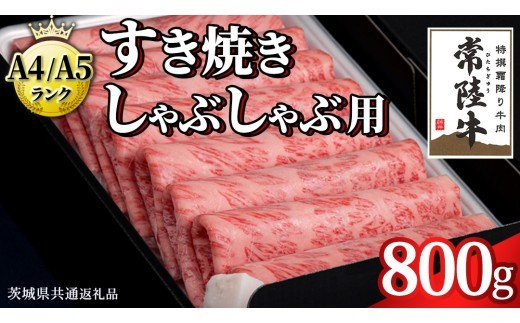
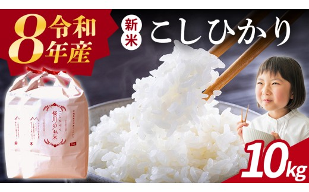
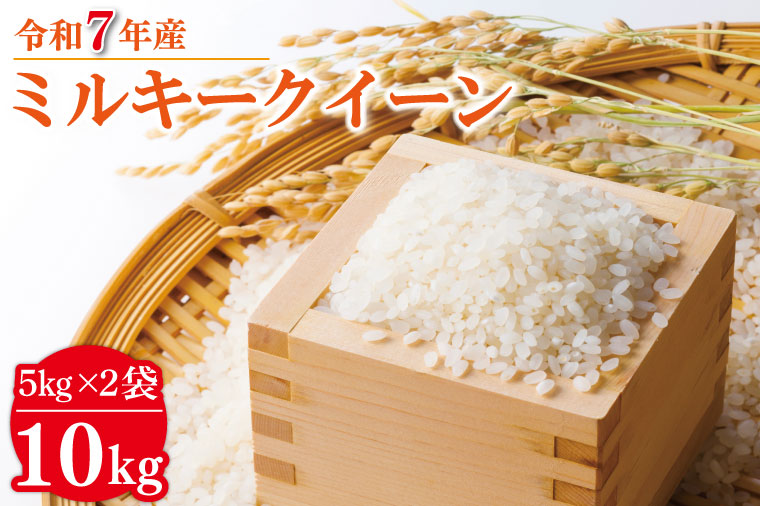

特産品紹介
各自治体自慢の特産品をご紹介します。
このマルシェは、茨城のまちと首都圏のみなさんが出会うところ。知って、味わって、気に入ったらふるさと納税で応援。イベントのあともつづく、まちとのつながりをつくります。
← 横にスワイプ →
※当日の内容は、都合により変更となる場合があります。試食・景品は数量限定で、なくなり次第終了です。記録・広報のため、撮影を行う場合があります。
自慢の産品が大集合。五十音順です。カードをチェックして、 8 つのまちをスタンプラリー。産品の名前をタップすると、当日の試食が待ち遠しくなります。

日本のワインづくりのふるさと
海と山にかこまれた、あんこうのまち

筑波山・加波山のふもと、桜の名所
筑波山を望む、田園のまち
利根川のほとり、都心から近いふるさと

霞ヶ浦と北浦にはさまれた、さつまいもの産地
ふるさと納税は、「応援したい自治体」を選んで寄附できるしくみです。生まれたまちでなくても、旅で好きになったまちでも、このマルシェで出会ったまちでも。寄附は地域のものづくりや子育て・教育・環境の保全などに使われ、お礼として地域の特産品が届きます。
気に入った特産品にはふるさと納税のQRコードラベル。スマホでその場で、あとからでも申し込めます。
後日、自治体から地域の特産品（お礼の品）がご自宅に届きます。
寄附金は地域のものづくりや子育て・環境の保全などに。確定申告かワンストップ特例で、税の控除も受けられます。
不要です。入場無料で、お好きな時間にお越しください。
もちろんです。ご当地輪投げは小さなお子さまも大歓迎です。試食もあります。ベビーカーでもご来場いただけます。
チラシ下部の参加券か、会場で配布する参加券を、抽選会受付までお持ちください。お一人様1回限りです。コピーしたものは無効です。
S.C.駐車場は約1,800台です。最大6時間無料ですが、お買い物条件があります。詳しくは施設公式サイトをご確認ください。
予約不要・入場無料。
お買い物のついでに、ふらっと寄れます。ご家族みなさんでお越しください。